электронный
ресурс по учебной дисциплине 1-58 01 01 - "ИНЖЕНЕРНО-ПСИХОЛОГИЧЕСКОЕ ОБЕСПЕЧЕНИЕ ИНФОРМАЦИОННЫХ ТЕХНОЛОГИЙ"
|
||
| Оглавление | Программа | Теория | Практика| Контроль знаний | Об авторах | ||
Тема 1 Основные направления электроники
1. Классификация электронных приборов.
1.1 Определение и классификация электронных приборов
Еще в 19 веке был открыт ряд физических явлений, природа которых обусловлена взаимодействием свободных электронов с электромагнитным полем и веществом. Такие явления получили названия электромагнитных. К ним относятся:
− испускание электронов накаленным телом – термоэлектронная эмиссия;
− испускание электронов веществом под воздействием фотонов (фотоэффект);
− испускание фотонов веществом под воздействием электронов (люминесценция);
− зависимость электронной проводимости цепи, состоящей из накаленного и ненакаленного электродов, разделенных вакуумным промежутком, от направления тока;
− ионизация разреженного газа при прохождении потока быстро движущихся электронов, сопровождающаяся резким увеличением электрической проводимости среды;
− наличие двух типов электропроводности полупроводника (электронной и дырочной), в зависимости от преобладания того или другого вида носителей заряда (электронов или дырок);
Перечисленные и многие другие электронные явления хорошо изучены и имеют практическое применение. Приборы, принцип действия которых основан на физических явлениях, связанных с движением электрически заряженных частиц в вакууме, газе или в твердом теле, называются электронными. Область науки и техники, которая занимается изучением и разработкой электронных приборов и устройств, называется электроникой.
Наиболее общим классификационным признаком является рабочая среда, в которой протекают основные физические процессы в приборе. Таким образом, различают приборы:
− электровакуумные,
− ионные (газоразрядные)
− полупроводниковые.
В электровакуумных приборах рабочее пространство изолировано от окружающей среды газонепроницаемой оболочкой – баллоном. Электрические процессы в этих приборах протекают в среде высокоразреженного газа с давлением порядка 10-
Ионными (газоразрядными) называют приборы, баллоны которых наполнены инертными газами (аргоном, неоном, криптоном и др.), их смесью, водородом или парами ртути. Давление газа в баллоне не велико: 10-10-
Конструкция и назначение ионных приборов весьма разнообразны. Большинство их типов применяется для выпрямления переменного тока (газотроны, игнитроны, тиристоры, ртутные вентили и др.). Используются они также для стабилизации постоянных напряжений (стабилитроны), в качестве электронных реле, переключающих устройств (ионные разрядники). Классификация газоразрядных приборов может быть дана по различным признакам. Подробнее это будет рассмотрено далее.
Полупроводниковые приборы – это приборы, действие которых основано на электрических явлениях в твердом теле, обладающем свойствами полупроводника.
1.2 Общие черты технологии производства электронных приборов
Технология производства электровакуумных и полупроводниковых приборов – это техническая наука, которая изучает:
1) способы переработки и направленного изменения свойств материалов или изделий;
2) физико-химические основы технологических процессов производства электронных приборов;
3) методы осуществления технологических процессов и закономерности, действующие в процессе изготовления изделий.
Технология электронных приборов является результатом исследований и разработок в различных отраслях знаний: общей физики, физики твердого тела, физики тонких пленок, физической химии, кристаллохимии, электрохимии, химической термодинамики, материаловедения, теории взаимодействия высокоэнергетичных пучков с поверхностью твердого тела и др.
Технология производства электронных приборов неразрывно связана с конструкцией и принципом действия изделия. Поэтому для правильного понимания особенностей технологического цикла и анализа всех используемых для его осуществления процессов или явлений необходимо изучить особенности конструкции этих приборов, а также особенности применяемых при их создании материалов.
Первой и основной особенностью большинства электровакуумных приборов является наличие в них высокого вакуума, который необходимо поддерживать в течении всего времени работы прибора. Это особенность объясняет необходимость обоснованного выбора того или иного материала, из которого изготавливаются детали электровакуумных приборов. Такие материалы должны обладать вакуумными свойствами, т.е. должны хорошо обезгаживаться, быть газонепроницаемыми (если их используют при изготовлении оболочки прибора), обладать способностью поглощать газы (если они применяются в качестве газопоглотителей) и т.д.
Вторая особенность ЭВП состоит в том, что отдельные элементы их конструкции – катоды, подогреватели, сетки, аноды, люминесцентные экраны, управляющие электроды, баллоны и ножки – изготавливают отдельно, а затем собирают в единую конструкцию. Это позволяет получить значительный результирующий процент выхода годных приборов и определяет важнейшую роль процессов получения межсоединений металлических и диэлектрических материалов.
Основой всякого ЭВП является катод. В зависимости от способа активации электронной эмиссии различают термоэмиссионные, автоэмиссионные и фотоэмиссионные катоды, а также катоды вторичной электронной эмиссии – диноды. Наиболее распространены термоэмиссионные катоды. Соответственно и технология получения высокоэффективных термоэмиссионных катодов составляет основу технологии ЭВП.
Важное место в технологии отводится методам получения различных покрытий. Они применяются для повышения эффективности катода, изоляции подогревателя, как антиэмиссионные покрытия сеток, светоизлучающие покрытия люминесцентных экранов, покрытия из нераспыляемых газопоглотителей, активные покрытия фотоэмиссионных катодов.
Большую роль в технологии производства ЭВП играют процессы формирования и очистки поверхности. Современный электровакуумный прибор представляет собой сложнейшее устройство с очень малыми межэлектродными расстояниями. В качестве материалов электродов и изоляторов используются пластичные и хрупкие металлы и их сплавы, керамические и стеклообразные изоляционные материалы, композиционные покрытия. Все эти материалы требуют специальных видов формообразования и обработки поверхности.
Рассмотренные общие особенности электровакуумных приборов в равной степени могут быть отнесены и к газоразрядным приборам. Наличие этих общих черт в различных приборах позволяют создать общую технологическую схему их производства.
1.3 Типовая технологическая схема производства электровакуумных и газоразрядных приборов.
Технология производства отдельных электронных приборов рассматривается в соответствии с этой схемой.
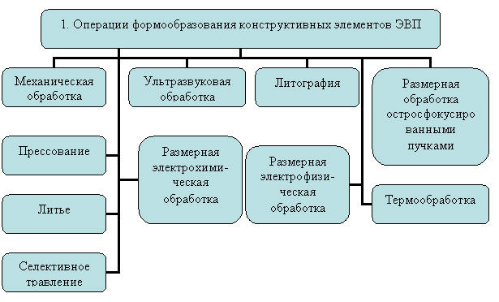
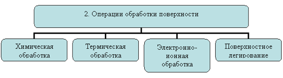
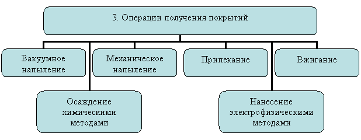
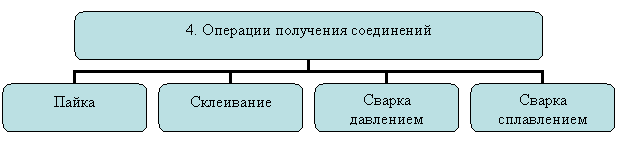
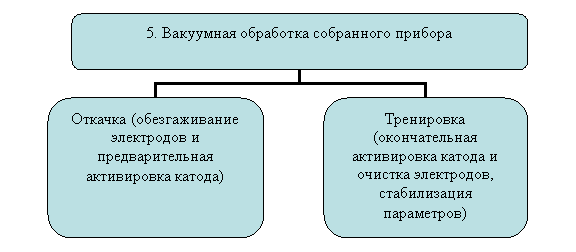
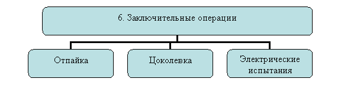
Рисунок 1.1 – Технология производства отдельных электронных приборов
2.Вакуумная электроника.
Вакуумные электронные приборы — один из типов электровакуумных приборов. Главная особенность приборов данного типа — движение электронов происходит в вакууме.
Электровакуумный прибор — устройство, предназначенное для генерации, усиления и преобразования электромагнитной энергии, в котором рабочее пространство освобождено от воздуха и защищено от окружающей атмосферы непроницаемой оболочкой.
К таким приборам относят
− вакуумные электронные приборы, в которых поток электронов проходит в вакууме;
− газоразрядные электронные приборы, в которых поток электронов проходит в газе;
Вакуумные электронные приборы можно разделить на следующие классы:
− электронные лампы или радиолампы: диоды, триоды, тетроды (в т.ч. лучевые), пентоды, — часто в одном баллоне для общего удешевления размещают сразу несколько разных вакуумных приборов;
− вакуумные приборы СВЧ: гиротрон, магнетрон, клистрон, лампа бегущей волны (ЛБВ), лампа обратной волны (ЛОВ);
− электронно-лучевые приборы: электронно-лучевые трубки, кинескопы;
− ускорители заряженных частиц: рентгеновские трубки;
− фотоэлектронные приборы:
ФЭУ,
вакуумные фотоэлементы,
электронно-оптический преобразователь;
− вакуумные индикаторы: индикаторные лампы(устар.), магический глаз, вакуумно-люминесцентные индикаторы.
К таким приборам относят как вакуумные электронные приборы, в которых поток электронов проходит в вакууме (см., напр., клистрон), так и газоразрядные электронные приборы, в которых поток электронов проходит в газе. Так же к электровакуумным приборам относятся и лампы накаливания.
3. Твердотельная электроника.
Твердоте́льная электро́ника — раздел электроники, изучающий физические принципы работы, функциональные возможности электронных приборов, в которых движение электронов или иных носителей заряда, обуславливающих электрический ток, происходит в объёме твёрдого тела.
Термин «твердотельные приборы» подчеркивает отличие этих приборов от электровакуумных, газоразрядных, жидкоэлектролитных, иных электронных приборов. Также не считаются твердотельными различные электромеханические приборы и устройства такие как реле, переключатели, исполнительные механизмы. Условно к твердотельным приборам можно отнести пьезоэлектрические приборы (например, кварцевые резонаторы, фильтры на поверхностных акустических волнах), приборы, использующие ферромагнитные свойства материалов, например, накопители на магнитных дисках (НМД), цилиндрических магнитных доменах (ЦМД), так как в этих материалах не происходит упорядоченное движение электрических зарядов.
Также твердотельная электроника изучает принципы конструирования электронных устройств, построенных на твердотельных приборах. Основные твердотельные приборы, используемые в электронных устройствах:
полупроводниковые диоды - наиболее обширный по различным функциям и областям применения класс полупроводниковых приборов:
− Выпрямительные силовые диоды.
− Выпрямительные малосигнальные диоды.
− Стабилитроны.
− Фотодиоды и диоды для регистрации ионизирующих излучений.
− Фотогальванические элементы (солнечные батареи).
− Магниточувствительные диоды.
− Термочувствительные диоды (термодатчики).
− Переключательные диоды.
− Светоизлучающие диоды (светодиоды и полупроводниковые лазеры).
− Туннельные диоды и обращённые диоды.
− СВЧ-диоды генерирующие (диоды Ганна, лавинно-пролётные диоды, туннельные диоды).
− СВЧ-диоды приемные и коммутационные (смесительные диоды, p-i-n диоды).
− Генераторы шума.
<− Детекторы ионизирующих излучений.
− Биполярные транзисторы.
− Полевые транзисторы.
− Двухбазовые диоды.
− Тиристоры, симисторы.
− Фоточувствительные транзисторы.
>− Цифровые микросхемы (логические микросхемы, микропроцессоры, запоминающие микросхемы и др.)
− Аналоговые микросхемы (операционные усилители, различные преобразователи сигналов).
Разделение на цифровые и аналоговые микросхемы условно, часто микросхемы имеют как аналоговые, так и цифровые узлы.
4. Полупроводниковая электроника.
Полупроводниковые приборы, ППП — широкий класс электронных приборов, изготавливаемых изполупроводников.
К полупроводниковым приборам относятся:
− Интегральные схемы (микросхемы)
− Полупроводниковые диоды (в том числе варикапы, стабилитроны, диоды Шоттки),
− Тиристоры, фототиристоры,
− Транзисторы,
− Приборы с зарядовой связью (ПЗС),
− Полупроводниковые СВЧ-приборы (диоды Ганна, лавинно-пролетные диоды),
− Оптоэлектронные приборы (фоторезисторы, фотодиоды, солнечные элементы, детекторы ядерных излучений, светодиоды, полупроводниковые лазеры, электролюминесцентные излучатели),
− Терморезисторы, датчики Холла.
Исследование и первые попытки создания полупроводниковых приборов проводились в СССР еще в 1920-30-х годах. В 1924 году в Нижегородской радиолаборатории ученый О.В. Лосев создал полупроводниковый детектор-усилитель и детектор-генератор электромагнитных излучений на частоты до десятков МГц. На этой основе впервые в мире было создано детекторное приемопередаточное устройство —кристадин.
Позже в СССР для развития отрасли были созданы научно-исследовательские институты и центры. В 1956 году введен в эксплуатацию Завод полупроводниковых приборов. Среди продукции завода на то время – пальчиковые лампы широкого применения и сверхминиатюрные стержневые лампы, первые полупроводниковые диоды Д2, диоды Д9, Д10, Д101-103А, Д11, стабилитроны Д808-813.
В 2014 году на Заводе полупроводниковых приборов была запущена новая линия производства для разработки и освоения современных сложных корпусов для интегральных микросхем.
Классификация полупроводниковых приборов.
Полупроводниковые приборы – это приборы, работа которых создана на применении свойств полупроводников.
Разделение полупроводниковых приборов показано на рис. 1.2
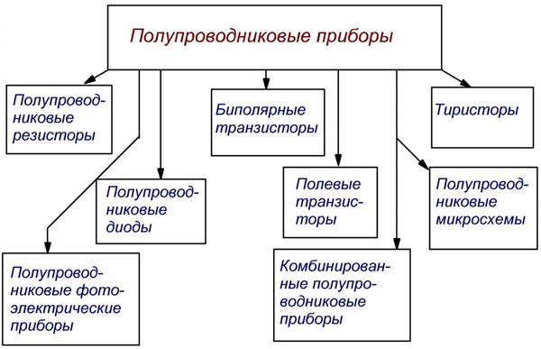
Рисунок 1.2 – Разделение полупроводниковых приборов
У полупроводниковых резисторов и диодов имеются два вывода и они относятся к двух-электродным приборам, у транзисторов три вывода и поэтому они относятся к трех-электродным приборам. Тиристоры же бывают и дух- и трех-электродными.
Полупроводниковые резисторы изготавливаются из изотропных полупроводниковых веществ. Электрические характеристики таких резисторов складываются электрическими качествами однородного полупроводника. В диодах применяют полупроводники с разными типами проводимости, образующих один p-n-переход. Электрические характеристики у диода зависят от электрических свойств этого p-n-перехода.
Биполярные транзисторы имеют два p-n-перехода. Электрические характеристики таких транзисторов зависят от взаимовлияния данных переходов. В полевых транзисторах применяются полупроводники с разными типами проводимости, которые образуют только один p-n-переход. Но по сравнению с биполярными транзисторами и диодами у полевых транзисторов электрические характеристики определяются взаимовлиянием p-n-перехода с изотропным каналом.
В тиристорах используются полупроводники с разными типами проводимости, образующих от три и более p-n-перехода. Эти характеристики у тиристоров зависят от взаимовлияния таких переходов.
В фотоэлектрических приборах применяется эффект генерации света и перемена электрических характеристик полупроводниковых устройств под влиянием оптического излучения. Комбинированные полупроводниковые приборы состоят из несколько разных полупроводниковых приборов, помещенных в едином корпусе.
Полупроводниковые микросхемы – это изделия микроэлектроники, исполняющие определенную работу преобразования и переработки сигнала, все части и соединения между ними этих изделий произведены внутри и на поверхности полупроводника.
5. Микроэлектроника.
Микроэлектроника представляет собой область электроники, связанную с исследованиями поведения заряженных частиц в твердом теле под воздействием электрических, магнитных, электромагнитных, тепловых полей, а также с созданием приборов и устройств в микроминиатюрном исполнении с использованием групповой технологии изготовления.
В микроэлектронике предполагается интеграция элементарных электронных приборов резисторов, конденсаторов, диодов, транзисторов). Поэтому синонимом микроэлектроники является понятие "интегральная электроника".
Говоря о микроэлектронике, имеют в виду микроэлектронные размеры элементов, говоря 5 интегральной электронике - интеграцию этих элементов на кристалле микросхемы, Дальнейшее развитие микроэлектронных приборов связано с уменьшением размеров элементарных приборов до субмикронных размеров и переход в нанометровый масштаб измерений. Таким образом, микроэлектронные приборы превращаются в наноэлектронные. При этом утрачивается групповая технология их изготовления.
С другой стороны, при интеграции на одном кристалле не только элементов, но и физических явлений и эффектов увеличиваются функциональные возможности приборов и устройств интегральной электроники. При этом используется уже не только схемотехнические решения для обработки и хранения информации, но и физические носители информационного сигнала - динамические неоднородности различной физической природы, то направление в развитии электроники называют функциональной электроникой.
Следует при этом еще раз подчеркнуть, что если с переходом в субмикронный диапазон размеров в наноэлектронике утрачивается принцип групповой технологии производства элементарных электронных приборов, то в функциональной электронике по- прежнему сохраняется принцип групповой технологии.
Динамическая неоднородность представляет собой локальный объем на поверхности или утри среды с отличными от ее окружения свойствами, которая не имеет внутри себя статических неоднородностей и генерируется в результате определенных физикохимических процессов. Динамическая неоднородность может быть локализирована или перемещаться по рабочему объему континуальной среды в результате взаимодействия с различными физическими полями или динамическими неоднородностями такой же или другой физической природы.
В процессе перемещения динамической неоднородности может происходить, например, перенос информации. Деградация динамической неоднородности не приводит, как правило, к потерям и сбоям в процессах обработки информации.
Известно большое количество динамических неоднородностей различной физической ироды (рис. 1.3). Это ансамбли заряженных частиц и квазичастиц (зарядовые пакеты, флуксоны и т. п.), домены (сегнетоэлектрические домены, домены Ганна, цилиндрические магнитные домены и т. п.), динамические неоднородности волновой природы (поверхностные акустические волны (ПАВ), магнитные статические волны (МСВ), волны пространственного заряда (ВПЗ), волны зарядовой плотности (ВЗП) и т. д.).
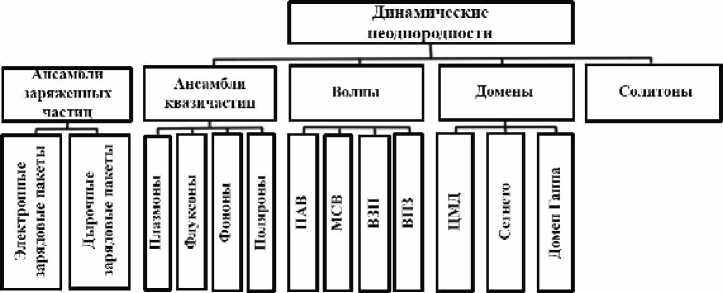
Рисунок 1.3 – Некоторые типы динамических неоднородностей
Идея использования динамических неоднородностей в приборах по обработке и хранению информации является основополагающей, и ее развитие привело к становлению функциональной электроники. Это не схемотехническое направление в микроэлектронике, использующее в качестве носителей информации динамические неоднородности, основной тенденцией развития которой является интеграция функциональных возможностей приборов и устройств.
6. Функциональная электроника
В конце 1970-х годов появилась идея использования динамических неоднородностей в процессах обработки и хранения информации, а также физических принципов интеграции не только числа элементов, но и числа функций, выполняемых микроэлектронным прибором. Первые работы в этой области принадлежат Борисову Б. С., Валиеву К. А., Васенкову А. А., Гуляеву Ю. В., Ерофееву А. А., Лаврищеву В. П., Новикову В. В., Носову Ю. Р., Попкову А. Ф., Пустовойту В. И., Ракитину В. В., Сретенскому В. Н., Стафееву В. И., Федотову Я. А. и другим отечественным учёным. Изучение принципов обработки и хранения информации с помощью динамических неоднородностей и разработка устройств, действующий на основе полученных знаний, являются основополагающими в процессе формирования нового направления в микроэлектронике — функциональной электроники.
Функциона́льная (микро)электро́ника — одно из современных направлений микроэлектроники, основанное на использовании физических принципов интеграции и динамических неоднородностей, обеспечивающих несхемотехнические принципы работы устройств. Функциональная интеграция обеспечивает работу прибора, как единого целого. Разделение его на элементы приводит к нарушению функционирования.
В функциональной микроэлектронике используется взаимодействие потоков электронов со звуковыми волнами в твёрдом теле, оптические явления в твёрдом теле, свойства полупроводников, магнетиков и сверхпроводников в магнитных полях и др/
Функциональная электроника представляет собой область интегральной электроники, в которой изучается возникновение и взаимодействие динамических неоднородностей в континуальных средах в совокупности с физическими полями, а также создаются приборы и устройства на основе динамических неоднородностей для целей обработки, генерации и хранения информации.
В зависимости от типа используемой динамической неоднородности, континуальной среды, той или иной комбинации физических полей или явлений различают направления в функциональной электронике, например:
− функциональная акустоэлектроника,
− функциональная магнитоэлектроника,
− функциональная оптоэлектроника,
− функциональная диэлектрическая электроника,
− молекулярная электроника и т. п.
Существуют также смешанные направления (акустооптика, магнитооптоакустика и другие).
Щука А. А. в статье «Электроника четвертого поколения — функциональная электроника?» (http://www.chipnews.ru/html.cgi/arhiv_i/99_04/stat-51.htm) предложил модель устройства функциональной электроники (УФЭ), состоящую из пяти элементов:
1 Использование динамических неоднородностей различной физической природы. Так, в акустоэлектронных устройствах используются динамические неоднородности в виде поверхностной акустической волны (ПАВ); в полупроводниковых приборах с зарядовой связью — зарядовые пакеты электронов или дырок; в приборах магнитоэлектроники — магнитостатические волны (МСВ) и т. д.
2 Все виды динамических неоднородностей генерируют, обрабатывают и хранят информацию в континуальных средах. Последние могут иметь любое агрегатное состояние, но интересы микроэлектроники сосредоточены на использовании твёрдого тела. Среда должна быть достаточно однородной по своим физико-химическим свойствам на всём тракте распространения информационного сигнала. Статические неоднородности, имеющиеся на поверхности или внутри континуальной среды, служат только для управления динамическими неоднородностями и не используются для обработки и хранения информации.
3 Генератор динамических неоднородностей, предназначенный для ввода последних в канал распространения, расположенный в континуальной среде.
4 Устройство управления динамическими неоднородностями в тракте переноса информационного сигнала и в области его хранения.
5 Детектор, осуществляющий считывание информации. Он позволяет преобразовать информационный массив, созданный динамическими неоднородностями, в двоичный массив, который можно обрабатывать цифровыми устройствами.
УФЭ первого поколения характеризуются тем, что в них используется один вид динамических неоднородностей в одной континуальной среде. Примерами являются линии задержки на ПАВ и память на ЦМД. Ко второму поколению относятся устройства, использующие одновременно динамические неоднородности различной физической природы в различных континуальных средах.
Объединяющим их признаком является динамическая неоднородность как носитель или транслятор или хранитель информации. Например, традиционная полупроводниковая схемотехническая электроника отличается от полупроводниковой функциональной электроники носителем информационного сигнала. В приборах схемотехнической микроэлектроники - аналоговых или цифровых ИС - информация хранится или обрабатывается в ячейках в виде заряда, потенциала или тока определенного уровня на определенной статической неоднородности.
Напротив, в ПЗС-матрицах, относящихся по своей физической природе к изделиям функциональной полупроводниковой электроники, информация хранится (либо обрабатывается) в виде динамической неоднородности - зарядового пакета, состоящего из электронов или дырок. Статические неоднородности, различные схемы обрамления в этих изделиях играют вспомогательную роль.
В функциональной электронике пока не существует принципиальных ограничений, связанных с размерами статических или динамических неоднородностей. Сравним изделия традиционной схемотехнической и функциональной электроники по быстродействию. В изделиях схемотехнической электроники перенос информационного сигнала происходит побитово по линиям межсоединений, что снижает помехоустойчивость и надежность изделий. В изделиях функциональной электроники массив информационных сигналов может быть обработан одномоментно весь, целиком, не обязательно в виде отдельных битов информации. Возможно создание устройства, позволяющего производить обработку информации в аналоговом и цифровом видах одновременно, поэтому в устройствах обработки информации на принципах функциональной электроники достигается производительность более 1015 операций в секунду.
В изделиях функциональной электроники перенос информации, как правило, осуществляется в континуальной среде, а не в линиях межсоединений. В схемотехнической электронике с ростом степени интеграции и уменьшением топологической нормы возникает проблема "тирании межсоединений". Она связана с резким увеличением интегральной площади, занимаемой на кристалле межсоединениями (более 60%), деградацией электрических параметров линий межсоединений, ростом энергии на перезарядку линий межсоединений, влиянием погонной емкости линий межсоединений и волнового сопротивления на частотные характеристики схемы, необходимостью многоуровневой разводки при большом числе линий межсоединений. В приборах функциональной электроники межсоединения выполняют функции вспомогательных связей и проблема "тирании межсоединений", характерная для интегральных схем, в этом случае не является ключевой проблемой.
Замечательным свойством приборов функциональной электроники является использование в процессах обработки информации элементарных функций высшего порядка. В качестве примеров элементарных функций высшего порядка назовем:
− Фурье-преобразование;
− интегральное преобразование Лапласа;
− операцию свертки; операцию корреляции;
− автокорреляцию;
− управляемую задержку информационного сигнала;
− хранение информации, в том числе в виде многобитовых носителей;
− фильтрацию информационного сигнала;
− когерентное сложение сигналов;
− ответвление информационных сигналов;
− комбинированную обработку информационных сигналов и т. д.
В то же время в изделиях функциональной электроники элементарные функции высшего порядка могут быть реализованы наряду с традиционными элементарными функциями типа И, ИЛИ, НЕ и их различными комбинациями.
В активной среде прибора функциональной электроники может храниться и одновременно обрабатываться большой объем информации, Поэтому изделие функциональной электроники может рассматриваться как процессор, выполняющий элементарные функции высшего порядка. На рис. 1.2 приведены некоторые примеры процессоров и их общие схемы.
Обработка информации в таком типе процессорах происходит в аналоговом виде, без перевода аналогового сигнала в цифровой код и обратно. При такой обработке передача информации может осуществляться без проводников или линий межсоединений.
Устройства памяти реализуются путем упорядоченного сохранения в континуальной среде динамических неоднородностей, каждая из которых служит битом информации. Возможно создание запоминающих устройств и на основе многобитовых динамических неоднородностей.
Как уже было сказано, в приборах и устройствах функциональной электроники информационный массив может быть обработан весь и сразу в одномоментном процессе. При этом не обязательно использовать последовательную побитовую обработку двоичной информации. Это эквивалентно случаю предельного распараллеливания процесса обработки массива информации. Например, акустооптический процессор обеспечивает производительность 1010 – 1012 операций/с, в то время как специальная микросхема быстрого преобразования Фурье позволяет обеспечить производительность порядка 2,5х10в,операций/с. Выигрыш на несколько порядков в производительности вполне существенен.
Рассмотренные процессоры относятся к изделиям функциональной электроники первого поколения. В них используется один вид динамических неоднородностей в одной континуальной среде. Если используются два или более вида динамических неоднородностей в равных средах, то такие изделия относятся ко второму поколению.
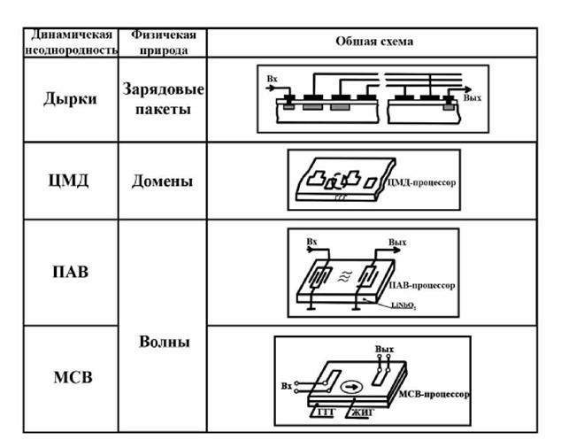
Рисунок 1.4 – Примеры процессоров, реализованных на динамических неоднородностях различной физической природы
Анализируя устройства функциональной электроники, можно выделить некоторые элементы, характерные для всех конструкций.
1 Во всех приборах и изделиях функциональной электроники используются динамические неоднородности различного вида и различной физической природы. Это первый элемент в предложенной модели прибора функциональной электроники. Так, в акустоэлектронных устройствах используются динамические неоднородности в виде поверхностной акустической волны (ПАВ); в полупроводниковых приборах с зарядовой связью - зарядовые пакеты электронов или дырок; в приборах магнитоэлектроники - магнитостатические волны (МСВ) и т. д.
2 Все виды динамических неоднородностей генерируют, обрабатывают или хранят информацию в континуальных средах, как правило, в твердом теле. Континуальная среда является вторым элементом модели. Вообще говоря, она может иметь любое агрегатное состояние. Наши интересы в области микроэлектроники сосредоточены в использовании твердого тела. По своим физико-химическим свойствам среда должна быть достаточно однородной на всем тракте распространения информационного сигнала. Статические неоднородности, имеющиеся на поверхности или внутри континуальной среды, служат только для управления динамическими неоднородностями и не используются для обработки и хранения информации. Динамические неоднородности, обрабатывая информационный сигнал в континуальных средах, не меняют их физико-химических свойств в условиях термодинамического равновесия. В противном случае динамическая неоднородность может образовать статическую неоднородность, представляющую собой "замороженный" бит информации.
3 Третьим элементом модели является генератор динамических неоднородностей, предназначенный для их ввода в канал распространения, расположенный в континуальной среде. Динамическая неоднородность может быть введена в информационный канал в континуальной среде и из-за ее пределов или сгенерирована в этом канале.
4 Устройство управления динамическими неоднородностями в тракте переноса информационного сигнала или в области его хранения является четвертым элементом в модели прибора.
5 Вывод или считывание информации осуществляется с помощью детектора. Это устройство позволяет преобразовать информационный массив, созданный динамическими неоднородностями, в массив двоичной информации. В этом случае можно использовать хорошо развитые устройства и методы цифровой обработки информации. Детектор является пятым элементом типовой модели.
Предложенная модель прибора функциональной электроники позволяет развить системный подход к анализу известных конструктивных решений - прототипов приборов, раскрыть физическую сущность явлений, лежащих в основе работы приборов, оптимизировать известные конструкции по технико-экономическим параметрам, а также разработать прогнотип - новое, ранее неизвестное конструктивное решение с заданными технико-экономическими показателями. Такого рода таксонометрические исследования имеют вполне самостоятельное значение как интеллектуальные исследования высокого уровня.
Скажем несколько слов о методическом подходе к изложению этой главы. В нем также исповедуется системный подход, который развит на предложенной физической модели. Материал по всем направлениям функциональной электроники изложен по одинаковой методике.
Основные направления развития функциональной микроэлектроники
Современная микроэлектроника базируется на интеграции дискретных элементов электронной техники, при которой каждый элемент схемы формируется отдельно в полупроводниковом кристалле. При этом в основе создания, ИМС лежит принцип элементной (технологической) интеграции, сопровождающейся микроминиатюризацией элементов (активных и пассивных) микросхемы. В ИМС можно выделить области, представляющие собой активные (диоды, транзисторы) и пассивные (резисторы, конденсаторы, катушки индуктивности) элементы. В интегральной микроэлектронике сохраняется главный принцип дискретной электроники, основанной на разработке электрической схемы по законам теории цепей. Этот принцип неизбежно связан с ростом числа элементов микросхемы, и межэлементных соединений по мере усложнения выполняемых ею функций.
Повышение степени интеграции микросхем и связанное с. этим уменьшение размеров элементов имеет определенные пределы. Интеграция свыше нескольких сотен тысяч элементов (в отдельных случаях и миллионов) на одном кристалле оказывается экономически нецелесообразной и технологически трудно выполнимой.
Сложными становятся проблемы топологии и теплоотвода. Поэтому в отдаленной перспективе интегральная микроэлектроника уже не будет полностью удовлетворять разработчиков сложной радиоэлектронной аппаратуры.
Функциональная микроэлектроника предполагает принципиально новый подход, позволяющий реализовать определенную функцию аппаратуры без применения стандартных базовых элементов, основываясь непосредственно на физических явлениях в твердом теле. В этом случае локальному объекту твердого тела придаются такие свойства, которые требуются для выполнения данной функции, и промежуточный этап представления желаемой функции в виде эквивалентной электрической схемы не требуется.
Функциональные микросхемы могут выполняться не только на основе полупроводников, но и на основе таких материалов, как сверхпроводники, сегнетоэлектрики, материалы с. фотопроводящими свойствами и др. Для переработки информации можно использовать явления, не связанные с электропроводностью (например, оптические и магнитные явления в диэлектриках, закономерности распространения ультразвука и т.д.).
Таким образом, функциональная микроэлектроника охватывает вопросы получения специальных сред с наперед заданными свойствами и создания различных электронных устройств методом физической интеграции, т. е. использования таких физических принципов и явлений, реализация которых позволяет получить приборы со сложным схемотехническим или системотехническим функциональным назначением.
В функциональной микроэлектронике начинают использовать (Рис.1.5).
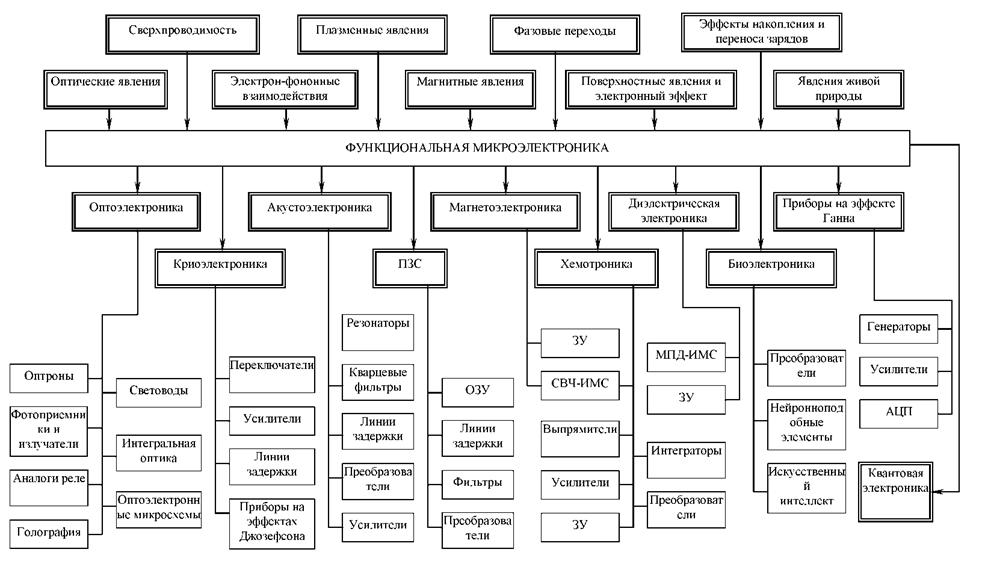
Рисунок 1.5 – Основные направления функциональной микроэлектроники
Оптические явления (когерентная и некогорентная оптика, нелинейная оптика, электрооптика, магнитооптика). Их свойства, связанные со свойствами светового потока, следующие:
- зарядовая нейтральность, однонаправленность, отсутствие гальванических связей и электрических контактов;
- двухмерность светового потока, а следовательно, возможность многоканальной обработки информации;
- высокая несущая частота и, следовательно, большая полоса пропускания каналов обработки информации.
Эти особенности стали основой интенсивно развивающегося направления функциональной микроэлектроники — оптоэлектроники.
Физические явления, связанные с взаимодействием потока электронов с акустическими волнами в твердом теле. Такие явления, как генерация и усиление акустических воли потоком электронов, движущихся со сверхзвуковыми скоростями, обусловили появление нового направления функциональной микроэлектроники — акустоэлектроники. Особенность этих явлений заключается в малой скорости распространения акустических волн (1*105см/с) в отличие от электромагнитных волн (3*1010 см/с), что позволяет реализовать миниатюрные линии задержки, фильтры с заданными частотными свойствами, усилители СВЧ и др.
Преимущество этого направления состоит в том, что реализация заданной функции обеспечивается лишь выбором конфигурации устройства.
Новые магнитные материалы (слабые ферромагнетики и магнитные полупроводники), появление которых привело к созданию нового направления — магнетоэлектроники. Отличительной особенностью слабых ферромагнетиков является малая по сравнению с классическими магнитными материалами намагниченность насыщения. Это дает возможность управлять движением магнитных доменов, называемых пузырями, в двух и трех измерениях слабыми магнитными полями и осуществлять тем самым функции хранения, перемещения и обработки больших объемов информации.
Характерные размеры «пузырей», составлявших примерно 1 мкм, позволяют достичь, высокой плотности записи информации (1*108 бит/см2). Большое преимущество таких систем состоит в том, что хранение информации осуществляется без питания, а перемещение «пузырей» — малым рассеянием мощности. Ряд новых материалов — магнитных полупроводников, обладающих свойствами магнетиков и полупроводников, — позволяет создавать приборы с большой функциональной гибкостью.
Покоящиеся и движущиеся электрические неоднородности (домены и шнуры) в однородных полупроводниках. Их исследование стимулировало создание функциональных интегральных микросхем.
Так как в данном случае используется однородный материал, то реализация заданной функции может быть достигнута выбором соответствующей конфигурации устройства. Высокие скорости движения неоднородностей электрического поля (1*107 см/с) обусловливают высокое быстродействие (меньше 1*10-9 с), а также генерацию и усиление в диапазоне СВЧ.
Явления, связанные с изменением структуры конденсированных тел на молекулярном уровне. Они привели к возникновению нового направления — квантовой или молекулярной микроэлектроники. К этому направлению относятся фазовые переходы в твердых телах и жидких кристаллах, сопровождающихся резкими изменениями электрических, оптических и магнитных свойств. Обусловленная этим высокая чувствительность к внешним воздействиям позволяет легко, осуществлять ряд операций по управлению и преобразованию потоков информации в различных функциональных системах.
Интересными материалами с еще не вполне раскрытыми, перспективами использования их в микроэлектронике являются органические полупроводники.
Микроэлектронные устройства с использованием доменов обладают высокими функциональными возможностями.
Элементы на основе эффекта Ганна. Помимо генераторов и усилителей СВЧ они позволяют создавать такие функциональные устройства, как импульсно-кодовые модуляторы, компараторы, аналого-цифровые преобразователи, нейристорные линии задержки, полный ряд логических элементов, генераторы колебаний сложной формы, регистры сдвига и запоминающие устройства (ЗУ). На основе этих элементов могут быть созданы сверхбыстродействующие микросхемы (теоретически до 10-12 с), превосходящие по быстродействию лучшие кремниевые микросхемы, по крайней мере, на порядок при том же уровне рассеиваемой мощности.
Малогабаритные СВЧ-генераторы на диодах Ганна уже миновали стадию лабораторных разработок. Они обладают низким уровнем шумов (сравнимым с клистронами) и мощностью излучения, достаточной для использования в радиолокационных устройствах в диапазоне частот 1 — 80 ГГц. Такие: диоды в пролетном режиме генерации обеспечивают выходную мощность 20 — 350 мВт — в непрерывном режиме и .1 — 400 Вт — в импульсном режиме. В режиме ограниченного накопления объемного заряда диоды Ганна позволяют получать импульсную мощность 3 — 6 кВт на частоте 1,5 —2 ГГц при к. п. д. 10 — 20%.
Явления холодной эмиссии, которые позволили создать электровакуумные приборы в микроэлектронном исполнении с применением пленок. Обладая всеми преимуществами вакуумных приборов (высокие входные сопротивления, малые шумы), они характеризуются очень высокой радиационной стойкостью, весьма малыми размерами, высокими рабочими частотами.
Явления живой природы, в частности на молекулярном уровне, позволяющие использовать принципы хранения и обработки информации в живых системах для создания сверхсложных систем обработки информации, приближающихся по своим функциональным возможностям к человеческому мозгу (искусственный интеллект), а также решать проблему эффективной связи «человек — машина». Эти явления открывают новое направление — биоэлектронику. Развитие этого направления может привести к научно технической революции в электронике, последствия которой трудно предвидеть.
Функциональные микросхемы, в которых используется эффект накопления и переноса зарядов, что позволяет реализовать плотность размещения элементов 3104 элемент/см2. Такие приборы по существу представляют собой МД11-структуры, они весьма технологичны (число технологических операций в два раза меньше по сравнению с обычной МДП-технологией). Приборы с переносом заряда (ППЗ), или приборы с зарядовой связью (ПЗС), могут стать основой построения логических схем, линий задержки, схем памяти и систем для получения изображений. Сравнительная простота технологии изготовления ПЗС по сравнению с системами на обычных МД11-транзисторах и почти десятикратное уменьшение площади схемы (~0,0016 мм2 на 1 бит информации) должны привести к существенному снижению стоимости систем на ПЗС. Использование полевых транзисторов с нитридом кремния в качестве диэлектрика затвора позволяет преодолевать один из основных недостатков полупроводниковых ЗУ — потерю информации при отключении питания. Такие ЗУ дают возможность реализовать плотность размещения элементов до 108 элемент/см2 при времени записи 10-6 с.
Другой тип управления электрическими неоднородностями в однородном материале состоит в помещении зарядов в потенциальные ямы в приэлектродной области. И здесь выполнение заданных функций достигается топологией контактов. Очень перспективно объединение методов, сочетающих заряд в потенциальных ямах с захватом и хранением заряда в поверхностном слое (электретный эффект), что позволяет совместить длительное хранение больших объемов, информации и ее обработку.
Интересные возможности для реализации быстродействующих ЗУ большого объема представляют переключатели на основе аморфных материалов (не имеющие кристаллического строения), обладающие симметричной S-образной вольт-амперной характеристикой. Время переключения прибора составляет 1,5*10-10 с. На основе элементов из халькогенидных стекол создано постоянное ЗУ на 256 бит с возможностью электрической перезаписи и высокой плотностью упаковки структуры, сравнимой с достигнутой плотностью в биполярной и МД1 I-технологии. Емкость ЗУ может возрасти до 106 бит. Эти приборы обеспечивают хранение информации без расхода энергии и считывание без разрушения, обладают симметричностью вольт-амперных характеристик и высокой радиационной стойкостью.
Наиболее перспективными из аморфных полупроводников (пленки толщиной не более 1 мкм) является S, Ge, As, Те, In, Sb, Se или их сплавы, а также диэлектрики на основе окислов этих полупроводников или окислов тугоплавких металлов переходной группы, например Gr, Ti, Та, Mo, Nb.
Аморфные материалы классифицируют следующим образом:
- материалы с резко изменяющимся, значением удельного сопротивления (рис. 1.6, а);.
- материалы с отрицательным дифференциальным сопротивлением до 106 Ом (рис. 1.6, б);
- материалы с двумя управляемыми состояниями электропроводности (рис. 1.6, в); сопротивления этих материалов могут различаться на семь порядков, а время переключения составляет 10-9 с;
- материалы с двумя устойчивыми состояниями переключения (рис. 1.6, г);
- функциональные материалы, объединяющие свойства перечисленных материалов (рис. 1.6, д).
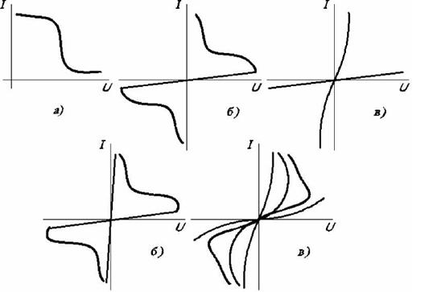
Рисунок 1.6 – Общий вид вольт-амперных характеристик различных аморфных материалов
Анализ вольт-амперных характеристик аморфных материалов показывает, что их проводимость в ряде случаев скачком изменяется на несколько порядков и сохраняется в таком состоянии неограниченно долго. Эти свойства аморфных материалов уже дали возможность построить пороговые переключатели, ячейки памяти, перестраиваемые ключи памяти с двумя устойчивыми состояниями. Отметим, что интервал рабочих температур аморфных переключателей и ячеек памяти составляет от -180 до +180°С.
Представляют большой интерес функциональные элементы с управляемым отрицательным сопротивлением на основе аморфных материалов. Эти приборы можно подразделить на две категории: 1) приборы, управляемые током и обладающие отрицательным дифференциальным сопротивлением (приборы с S-образной характеристикой); 2) приборы, управляемые напряжением и обладающие эффектом памяти (приборы с N-образной характеристикой). Первый тип приборов реализуется на пленках окислов Та, Ti, Nb, второй — на пленках диэлектриков, содержащих окислы, сульфиды и флюориды.
На основе аморфных полупроводников развиваются перспективные приборы — туннельные пленочные эмиттеры (рис. 1.7). По внешнему виду эти приборы почти не отличаются от конденсаторных структур типа «металл — диэлектрик — металл», однако принцип их работы иной. Пленка диэлектрика очень тонкая, способная пропускать токи до 0,01 А, верхний электрод также достаточно тонкий (не более 50 нм). Принцип работы пленочных эмиттеров следующий. Электроны из катода (толщиной порядка 0,5 мкм) попадают в диэлектрик и в зависимости от толщины аморфной пленки диэлектрика разгоняются в нем до больших скоростей либо рассеиваются со значительным потерями энергии. Толщину диэлектрика выбирают минимальной, однако такой, чтобы сохранялась сплошная структура пленки и не было частичных микропробоев диэлектрика. Рабочая толщина диэлектрика обычно не превышает 40 нм. Так называемые горячие электроны просачиваются через потенциальный барьер и мигрируют через наружный электрод в вакуум. Пленочная структура металл — диэлектрик — металл выполняет фактически функцию холодного катода, который в отличие от обычных катодов почти не шумит, обладает повышенной радиационной стойкостью и очень малыми размерами при большом токе эмиссии с единицы поверхности.
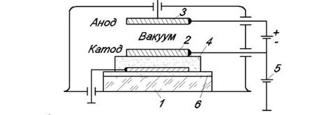
1 - подложка; 2 - алюминий, золото или вольфрам; 3 - золото; 4 - Si02 или А1203; 5 - алюминий; 6 -грунтующий подслой из Si02
Рисунок 1.7 – Структура накаливаемого пленочного эмиттера:
Когерентные свойства сигнала для создания ряда новых твердотельных функциональных приборов: генераторов синусоидальных колебаний, усилителей, умножителей, преобразователей частоты, фазовращателей, трансформаторов, линий задержки, нейристорных линий, логических элементов, ячеек памяти и т. д. Следует особо выделить специфическое физическое явление, основанное на квантовых когерентных свойствах носителей заряда — эффект Джозефсона. Суть его состоит в том, что через достаточно тонкую (порядка 2 нм) диэлектрическую прослойку между сверхпроводящими слоями при низких температурах даже в отсутствие разности потенциалов может протекать своеобразный туннельный ток, легко управляемый сравнительно слабыми внешними сигналами. Значения параметров приборов, основанных на этом эффекте, существенно превышают значения соответствующих параметров приборов интегральной микроэлектроники. Исследования показали, что быстродействие отдельных приборов на эффекте Джозефсона достигает 20 — 30 пс, а мощность рассеяния равна 100 нВт, т. е. во много раз меньше, чем в обычных интегральных микросхемах. Основная трудность при изготовлении таких приборов — получение стабильного диэлектрика при толщинах порядка 2 нм.
7. Терминология и основные понятия
Полупроводники, или полупроводниковые соединения, бывают собст- венными и примесными.
Собственные полупроводники – это полупроводники, в которых нет примесей (доноров и акцепторов). Собственная концентрация (ni) – кон- центрация носителей заряда в собственном полупроводнике (электронов в зоне проводимости n и дырок в валентной зоне p, причем n = p = ni). При 18 Т = 0 в собственном полупроводнике свободные носители отсутствуют (n = p = 0). При Т > 0 часть электронов забрасывается из валентной зоны в зону проводимости. Эти электроны и дырки могут свободно перемещаться по энергетическим зонам.
Дырка – это способ описания коллективного движения большого числа электронов (примерно 1023 см-3) в неполностью заполненной валентной зоне.
Электрон – это частица, дырка – это квазичастица. Электрон можно инжекти- ровать из полупроводника или металла наружу (например, с помощью фото- эффекта), дырка же может существовать только внутри полупроводника.
Легирование – введение примеси в полупроводник, в этом случае полу- проводник называется примесным. Если в полупроводник, состоящий из элементов 4 группы (например, кремний или германий), ввести в качестве примеси элемент 5 группы, то получим донорный полупроводник (у него будет электронный тип проводимости), или полупроводник n-типа. Если же ввести в качестве примеси элемент 3 группы, то получится акцепторный полупроводник, обладающий дырочной проводимостью (р-тип) (рис. 1.2).
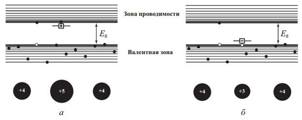
Рис. 1.8 Энергетические схемы полупроводников n-типа (а) и p-типа (б)
Для того, чтобы использовать для описания движения электронов и дырок в полупроводниках классические представления, вводятся понятия эффективных масс электрона и дырки mn * и mp * соответственно. В этом случае уравнения механики a = F/m* , или dp/dt = F, будут справедливы, если вместо массы свободного электрона (электрона в вакууме) m0 в эти уравнения подставить эффективную массу электрона mn * (p = mn * ·υ). Эффективная масса учитывает влияние периодического потенциала атомов в кристалле полупроводника на движение электронов и дырок, и определяется уравнениями дисперсии.
| (С) БГУИР |